3.2 The phenology of maize
Like the Hopi, Pueblo Farming Project researchers also have desccriptions for the life cycle of maize. Pueblo Farming Project scientists use stages of maize growth from maize phenology, or the scientific study of how plant growth and reproduction relates to the environment. The photographs below illustrate the growth stages that were recorded by Pueblo Farming Project researchers during the growing season.
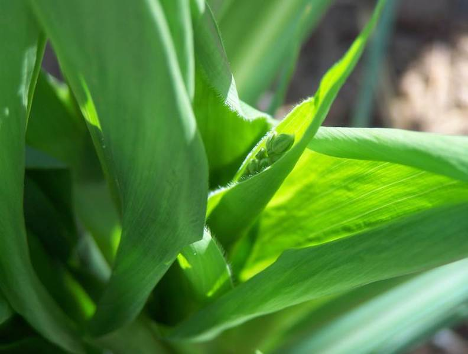
 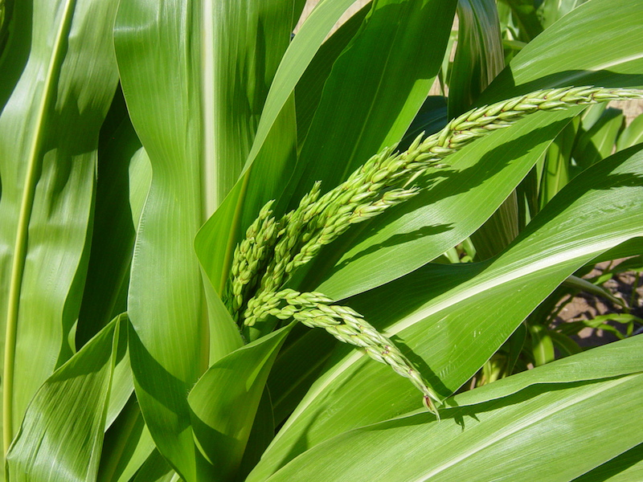
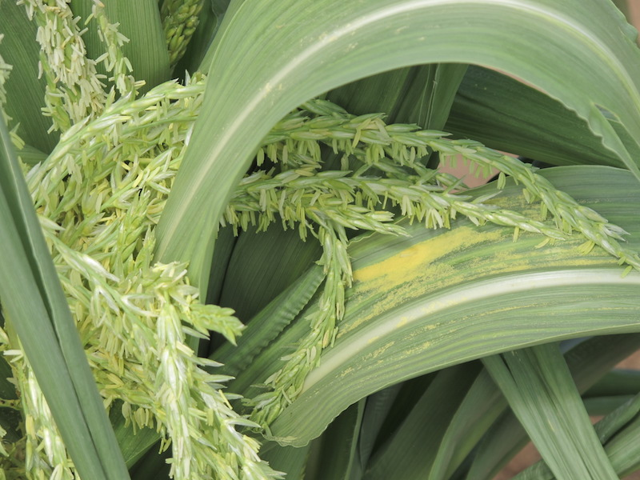
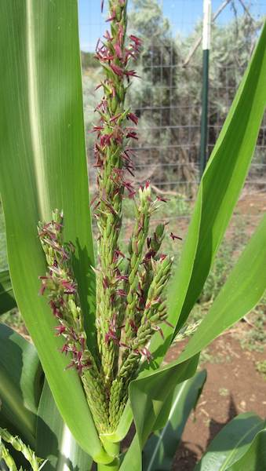
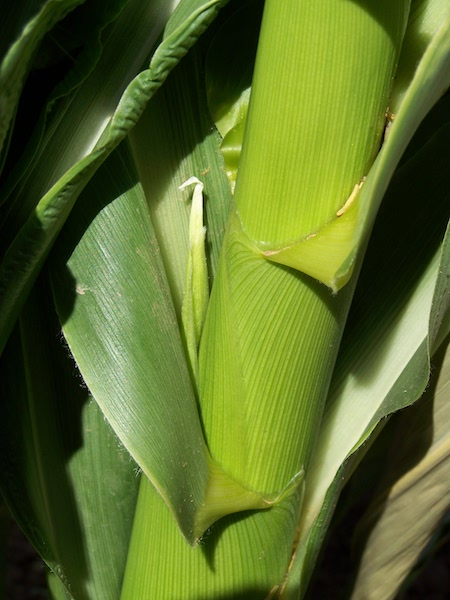
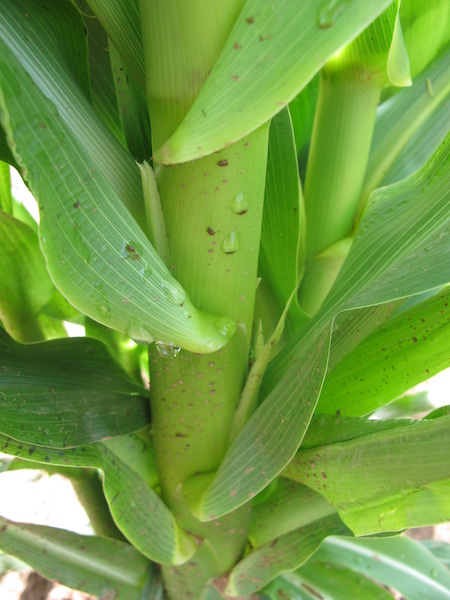
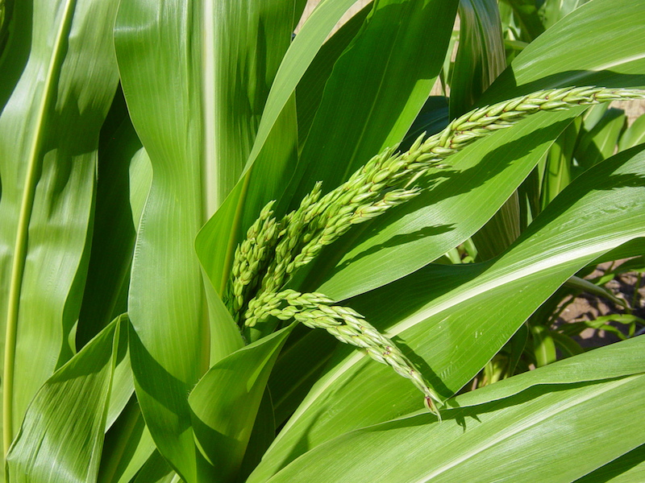
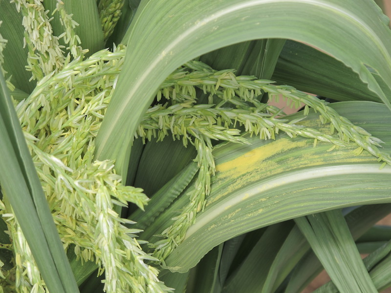
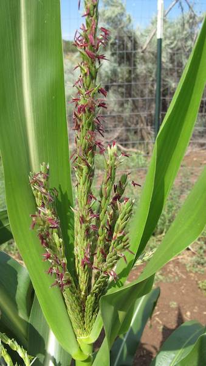
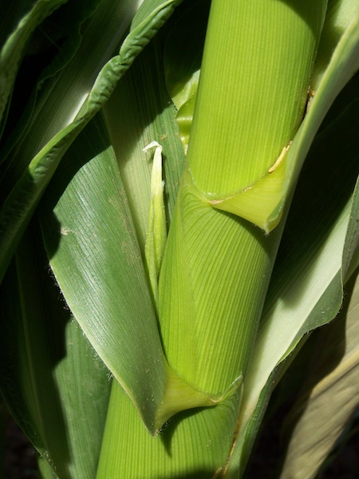
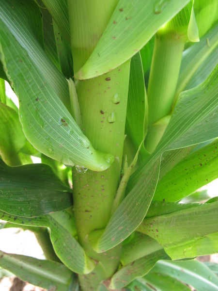
 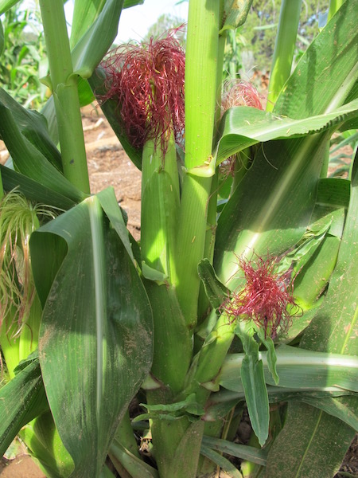
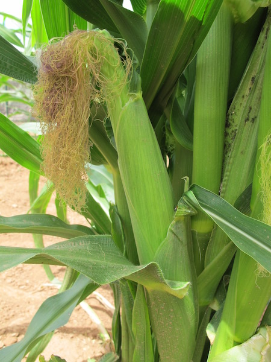
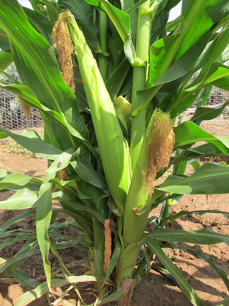
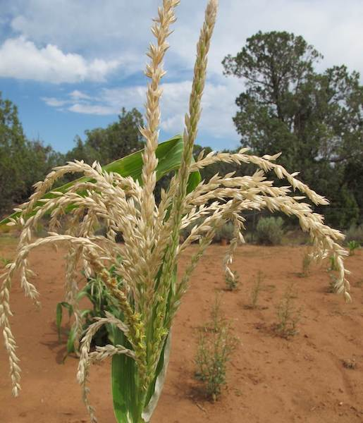
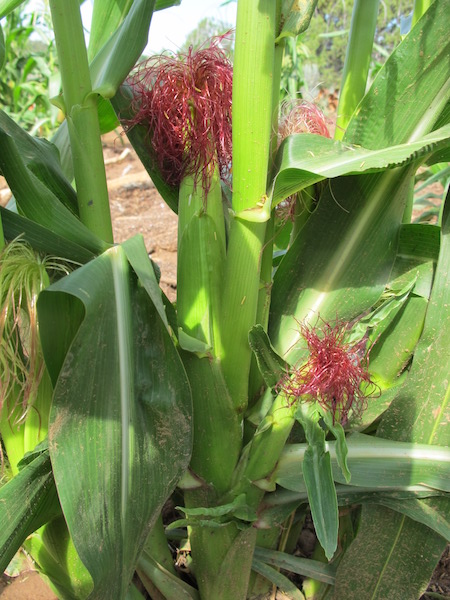
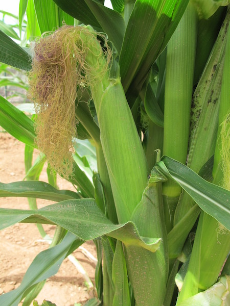
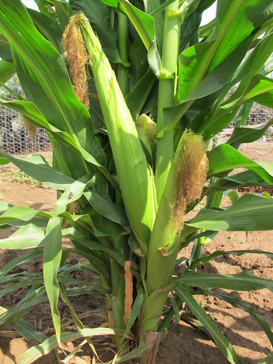
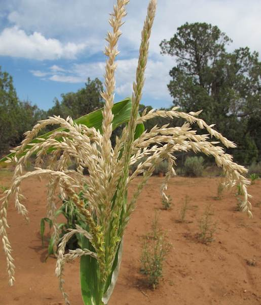